Show code cell source
# HIDE CODE
import re
import os
import sys
import collections
import numpy as np
import pandas as pd
import nibabel as nib
from pathlib import Path
from os.path import join as pjoin
from scipy import stats as sp_stats
from tqdm.notebook import tqdm
import matplotlib.pyplot as plt
import seaborn as sns
sns.set_style('whitegrid')
# GitHub
git_path = pjoin(os.environ['HOME'], 'Dropbox/git/Ca-fMRI/')
sys.path.insert(0, git_path)
from simulation.simulation import *
from utils.plotting import *
from utils.processing import *
from model.configuration import Config
def filter_islands(partition, atlas, node_labels, min_com_size: int = 3):
coms_ctr = collections.Counter(partition.values())
good_com_idxs = zip(*filter(lambda x: x[1] > min_com_size, coms_ctr.most_common()))
good_com_idxs = sorted(tuple(good_com_idxs)[0])
bad_com_idxs = [item for item in set(partition.values()) if item not in good_com_idxs]
comm_dict = collections.defaultdict(list)
for k, v in partition.items():
comm_dict[v].append(k)
comm_dict = dict(sorted(comm_dict.items()))
comm_mat = np.ones(atlas.shape) * -1
for node, com_idx in partition.items():
region_id = node_labels[node]
if com_idx in good_com_idxs:
comm_mat[atlas == region_id] = good_com_idxs.index(com_idx)
else:
comm_mat[atlas == region_id] = np.nan
output = {
'good_com_idxs': good_com_idxs,
'bad_com_idxs': bad_com_idxs,
'comm_dict': comm_dict,
'comm_mat': comm_mat,
}
return output
def plot_louvain_communities(
pearson: dict,
spearman: dict,
atlas: np.ndarray,
modularities: dict,
selected_idxs: list,
pearson_th: float = 0.8,
spearman_th: float = 0.7,
figsize=(12, 4.5),
colorbar=False, ):
x0, y0 = tuple(zip(*modularities.items()))
best_idx = np.argmax(y0)
best_res = x0[best_idx]
sns.set_style('white')
plot_idxs = sorted(selected_idxs + [best_idx])
fig, axes = plt.subplots(2, len(plot_idxs), figsize=figsize)
for ii, idx in enumerate(plot_idxs):
# pearson
g = nx.from_numpy_matrix(pearson[pearson_th])
coms = cdlib_algorithms.louvain(
g_original=g,
weight='weight',
resolution=x0[idx],
randomize=False,
)
partition = convert('community', 'partition', community=coms.communities)
output = filter_islands(partition, atlas, node_labels, min_com_size=3)
q = nx_comm.modularity(g, communities=coms.communities)
im = axes[0, ii].imshow(output['comm_mat'], cmap='Spectral_r', interpolation='none')
if colorbar:
plt.colorbar(im, ax=axes[0, ii], shrink=0.7)
msg = 'Q = {:.3f}, # com = {:d}'
msg = msg.format(q, len(np.unique(output['comm_mat'][output['comm_mat']>-1])))
axes[0, ii].set_title(msg, y=1.03)
# spearman
g = nx.from_numpy_matrix(spearman[spearman_th])
coms = cdlib_algorithms.louvain(
g_original=g,
weight='weight',
resolution=x0[idx],
randomize=False,
)
partition = convert('community', 'partition', community=coms.communities)
output = filter_islands(partition, atlas, node_labels, min_com_size=3)
q = nx_comm.modularity(g, communities=coms.communities)
im = axes[1, ii].imshow(output['comm_mat'], cmap='RdYlBu_r', interpolation='none')
if colorbar:
plt.colorbar(im, ax=axes[1, ii], shrink=0.7)
msg = 'res = {:.3f}\n\nQ = {:.3f}, # com = {:d}'
msg = msg.format(x0[idx], q, len(np.unique(output['comm_mat'][output['comm_mat']>-1])))
axes[1, ii].set_title(msg, y=1.03)
if ii == 0:
axes[0, ii].set_ylabel('pearson\n(th = {:.2f})\n'.format(pearson_th), fontsize=12)
axes[1, ii].set_ylabel('spearman\n(th = {:.2f})\n'.format(spearman_th), fontsize=12)
for j in range(2):
axes[j, ii].set_xticks([])
axes[j, ii].set_yticks([])
fig.tight_layout()
plt.show()
return fig, axes
Load data#
config = Config()
num_regions = 1024
load = load_organized_data(
folder='atlas-{:d}_unfiltered_unnormalized'.format(num_regions),
config=config,
subject=6,
session=1,
run=1,
)
sns.set_style('white')
plt.figure(figsize=(20, 7.5))
plt.subplot(131)
plt.imshow(load['atlas_kmeans'], cmap='nipy_spectral', interpolation='none')
plt.colorbar(shrink=0.8)
plt.title('ROIs', fontsize=17)
plt.subplot(132)
plt.imshow(load['ref'], cmap='Greys_r', interpolation='none')
for j, i in load['kmeans_centers']:
plt.plot(i, j, marker='o', color='r', markersize=5)
plt.colorbar(shrink=0.8)
plt.title('ROI centers on cortex', fontsize=17)
plt.subplot(133)
plt.imshow(load['atlas'], cmap='flag_r', interpolation='none')
plt.colorbar(shrink=0.8)
plt.title('Anatomical atlas', fontsize=17)
sup = plt.suptitle('Here we define regions of interest (ROI)\nIn this parcellation schemce, we have {:d} ROIs'.format(num_regions), fontsize=25, y=1.02)
plt.tight_layout()
plt.savefig('kmeans_atlas_{:d}.pdf'.format(num_regions), dpi=300, bbox_inches='tight', bbox_extra_artists=[sup])
plt.show()
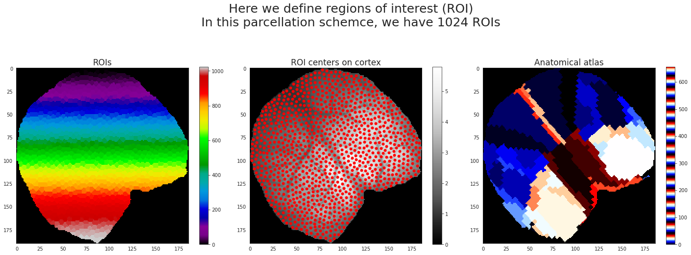
ROI num pix plot#
sns.set_style('whitegrid')
fig, axes = plt.subplots(figsize=(13.5, 7.5), nrows=2, ncols=3)
for idx, num_regions in enumerate([32, 64, 128, 512, 1024]):
i, j = idx//3, idx%3
load = load_organized_data(
folder='atlas-{:d}_unfiltered_unnormalized'.format(num_regions),
config=config,
subject=6,
session=1,
run=1,
)
num_pixs_per_roi = {k: len(np.where(load['atlas_kmeans'] == k)[0]) for k in range(1, num_regions+1)}
_ = sns.histplot(num_pixs_per_roi.values(), kde=True, ax=axes[i, j])
mean = np.mean(list(num_pixs_per_roi.values()))
sd = np.std(list(num_pixs_per_roi.values()))
axes[i, j].axvline(mean, ls='--', label='avg = {:.0f} ± {:.0f}'.format(mean, sd))
axes[i, j].legend(loc='upper right')
axes[i, j].set_title('num regions: {:d}'.format(num_regions))
axes[i, j].set_xlabel('num pixels in a region')
load = load_organized_data(
folder='atlas-allen_unfiltered_unnormalized',
config=config,
subject=6,
session=1,
run=1,
)
num_regions = len(np.unique(load['atlas'])) - 1
num_pixs_per_roi = {k: len(np.where(load['atlas'] == k)[0]) for k in range(1, num_regions+1)}
mean = np.mean(list(num_pixs_per_roi.values()))
sd = np.std(list(num_pixs_per_roi.values()))
_ = sns.histplot(num_pixs_per_roi.values(), kde=True, palette='Reds', bins=10, ax=axes[-1, -1])
axes[-1, -1].axvline(mean, ls='--', color='r', label='avg = {:.0f} ± {:.0f}'.format(mean, sd))
axes[-1, -1].legend(loc='upper right')
axes[-1, -1].set_title('num regions: {:d}'.format(num_regions))
axes[-1, -1].set_xlabel('num pixels in a region')
sup = plt.suptitle('Distribution of number of pixels that fall into ROIs: kmeans vs Allen', fontsize=20, y=1.02)
fig.tight_layout()
fig.savefig('dist_pix_roi.pdf'.format(num_regions), dpi=500, bbox_inches='tight', bbox_extra_artists=[sup])
plt.show()
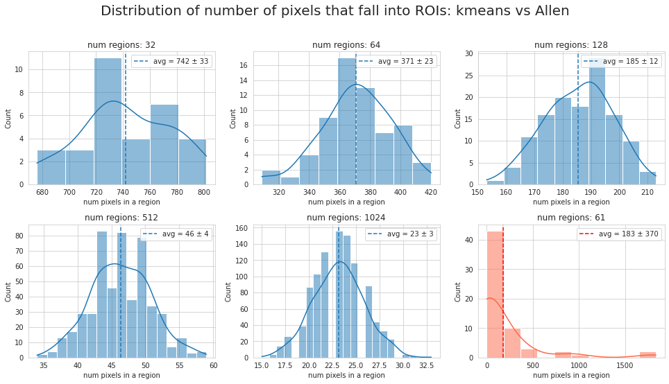
Means and SD plot#
config = Config()
dict_list = []
for num_regions in tqdm([32, 128, 256, 1024]):
for subject in tqdm(range(1, config.num_subjects+1), leave=False):
for session in tqdm(range(1, config.num_sessions+1), leave=False):
for run in range(1, config.num_runs+1):
load = load_organized_data(
folder='atlas-{:d}_unfiltered_unnormalized'.format(num_regions),
config=config,
subject=subject,
session=session,
run=run,
)
if load is None:
continue
means = [item.mean() for item in load['ca'].values()]
stds = [item.std() for item in load['ca'].values()]
data_dict = {
'region_idx': list(load['ca']),
'num_regions': [num_regions] * num_regions,
'subject': [subject] * num_regions,
'session': [session] * num_regions,
'run': [run] * num_regions,
'mu_run': [np.mean(means)] * num_regions,
'sigma_run': [np.mean(stds)] * num_regions,
'mu_roi': means,
'sigma_roi': stds,
}
dict_list.append(data_dict)
df = pd.DataFrame.from_dict(merge_dicts(dict_list))
df = reset_df(df)
sns.set_style('whitegrid')
fig, (ax0, ax1) = plt.subplots(1, 2, figsize=(13.5, 6))
selected_df = df.loc[(df.num_regions == 256) & (df.region_idx == 1) & (df.subject == 1)]
palette_ = sns.color_palette('Set1_r', n_colors=config.num_runs)
palette = {i+1: list(palette_)[i] for i in range(config.num_runs)}
sns.set_style('whitegrid')
plt.figure(figsize=(8, 6))
sns.scatterplot(
data=selected_df,
x='mu_run',
y='sigma_run',
style='session',
hue='run',
palette=palette,
s=300,
alpha=0.8,
ax=ax0,
)
ax0.set_title('Only subject = 1', fontsize=17)
selected_df = df.loc[(df.num_regions == 256) & (df.region_idx == 1) & (df.mu_run < 1000)]
palette = {i+1: 'C{:d}'.format(i) for i in range(config.num_subjects)}
sns.set_style('whitegrid')
plt.figure(figsize=(13, 12))
sns.scatterplot(
data=selected_df,
x='mu_run',
y='sigma_run',
hue='subject',
palette=palette,
s=100,
alpha=0.7,
ax=ax1,
)
ax1.set_title('Data from all runs/sessions combined', fontsize=17)
for ax in [ax0, ax1]:
ax.set_xlabel('mean ($\mu$)', fontsize=15)
ax.set_ylabel('standard deviation ($\sigma$)', fontsize=15)
msg = 'Distribution of means and variances. A pair ($\mu, \sigma$) computed for data from each run'
sup = fig.suptitle(msg, fontsize=20, y=1.02)
fig.tight_layout()
fig.savefig('dist_mu_sigma.pdf'.format(num_regions), dpi=500, bbox_inches='tight', bbox_extra_artists=[sup])
plt.show()
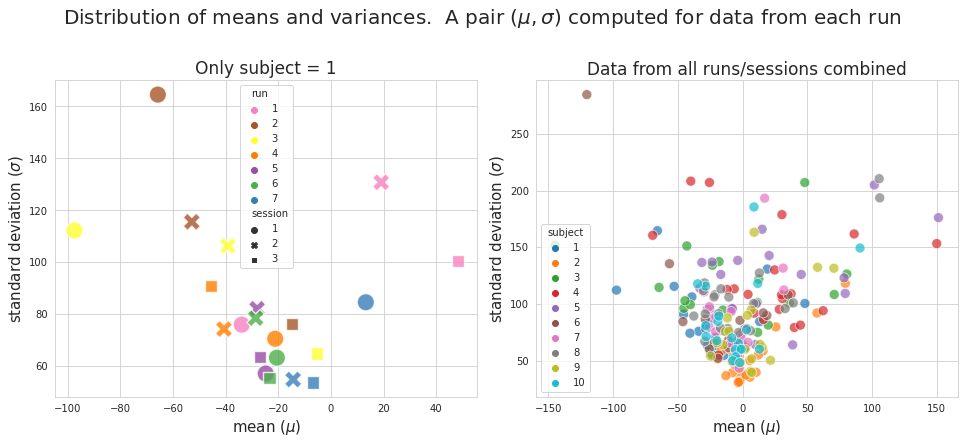
<Figure size 576x432 with 0 Axes>
<Figure size 936x864 with 0 Axes>
palette_run = sns.color_palette('Set1_r', n_colors=config.num_runs)
subject = 6
sns.set_style('whitegrid')
fig, axes = plt.subplots(1, 3, figsize=(13.5, 5))
for session in range(1, config.num_sessions+1):
selected_df = df.loc[
(df.num_regions == 1024) &
(df.subject == subject) &
(df.session == session) &
(df.mu_run < 1000)
]
palette = {i+1: list(palette_run)[i] for i in range(config.num_runs)}
sns.histplot(
data=selected_df,
x='mu_roi',
y='sigma_roi',
hue='run',
palette=palette,
ax=axes[session-1],
)
axes[session-1].set_title("subject = {:d}, session = {:d}".format(subject, session))
axes[session-1].get_legend().remove()
msg = 'Distribution of means and variances\n'
msg += 'A pair ($\mu, \sigma$) computed for data from each ROI within runs (color coded)'
sup = fig.suptitle(msg, fontsize=17, y=1.02)
fig.tight_layout()
fig.savefig('dist_mu_sigma_roi_runs.png'.format(num_regions), dpi=300, bbox_inches='tight', bbox_extra_artists=[sup])
plt.show()
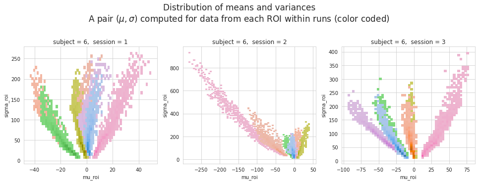
subject = 7
sns.set_style('whitegrid')
fig, axes = plt.subplots(1, 3, figsize=(13.5, 5))
for session in range(1, config.num_sessions+1):
selected_df = df.loc[
(df.num_regions == 1024) &
(df.subject == subject) &
(df.session == session) &
(df.mu_run < 1000)
]
palette = {i+1: list(palette_run)[i] for i in range(config.num_runs)}
sns.histplot(
data=selected_df,
x='mu_roi',
y='sigma_roi',
hue='run',
palette=palette,
ax=axes[session-1],
)
axes[session-1].set_title("subject = {:d}, session = {:d}".format(subject, session))
axes[session-1].get_legend().remove()
msg = 'Distribution of means and variances\n'
msg += 'A pair ($\mu, \sigma$) computed for data from each ROI within runs (color coded)'
sup = fig.suptitle(msg, fontsize=17, y=1.02)
fig.tight_layout()
# fig.savefig('dist_mu_sigma_roi_runs.png'.format(num_regions), dpi=300, bbox_inches='tight', bbox_extra_artists=[sup])
plt.show()
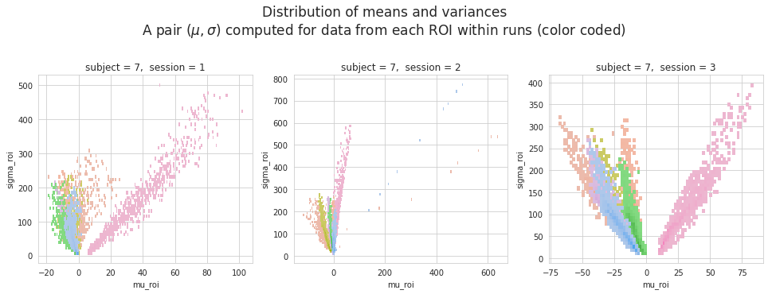
palette_session = {i+1: 'C{:d}'.format(i) for i in range(config.num_sessions)}
sns.set_style('whitegrid')
fig, axes = plt.subplots(2, 5, figsize=(13.5, 5.5))
for subject in range(1, config.num_subjects+1):
i, j = (subject - 1) // 5, (subject - 1) % 5
selected_df = df.loc[
(df.num_regions == 1024) &
(df.subject == subject) &
(df.mu_run < 1000)
]
sns.histplot(
data=selected_df,
x='mu_roi',
y='sigma_roi',
hue='session',
palette=palette_session,
ax=axes[i, j],
)
axes[i, j].set_title("subject = {:d}".format(subject))
axes[i, j].get_legend().remove()
msg = 'Distribution of means and variances\n'
msg += 'A pair ($\mu, \sigma$) computed for data from each ROI within sessions (color coded)'
sup = fig.suptitle(msg, fontsize=17, y=1.02)
fig.tight_layout()
fig.savefig('dist_mu_sigma_roi_sessions.png'.format(num_regions),
dpi=300, bbox_inches='tight', bbox_extra_artists=[sup])
plt.show()
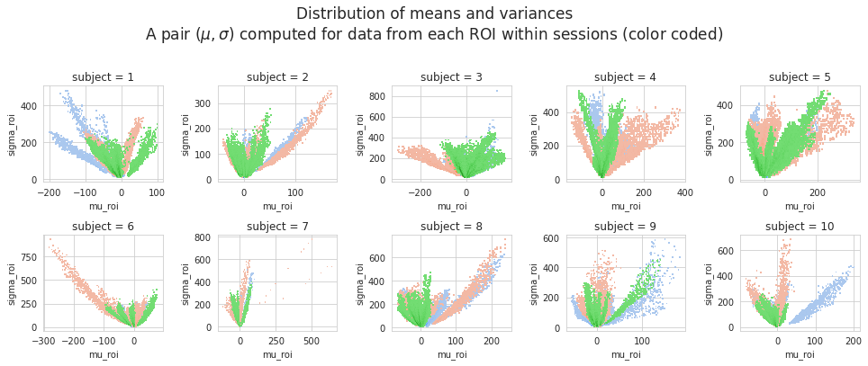
plt.figure(figsize=(8, 6))
selected_df = df.loc[(df.num_regions == 1024) & (df.mu_run < 1000)]
palette = {i+1: 'C{:d}'.format(i) for i in range(config.num_subjects)}
sns.histplot(data=selected_df, x='mu_roi', y='sigma_roi', hue='subject', palette=palette)
msg = 'Distribution of means and variances\n'
msg += 'A pair ($\mu, \sigma$) computed for data combined from each animal (color coded)'
sup = plt.suptitle(msg, fontsize=17, y=1.02)
plt.tight_layout()
plt.savefig('dist_mu_sigma_roi_subjects.png'.format(num_regions),
dpi=300, bbox_inches='tight', bbox_extra_artists=[sup])
plt.show()
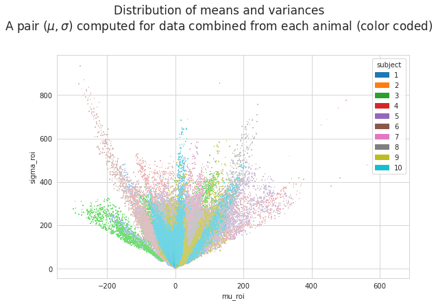
selected_df = df.loc[(df.num_regions == 1024) & (df.mu_run < 1000) & (df.mu_roi > 350)]
selected_df
| region_idx | num_regions | subject | session | run | mu_run | sigma_run | mu_roi | sigma_roi | |
|---|---|---|---|---|---|---|---|---|---|
| 155964 | 29 | 1024 | 4 | 2 | 1 | 149.417506 | 161.958098 | 363.987870 | 323.025932 |
| 155965 | 30 | 1024 | 4 | 2 | 1 | 149.417506 | 161.958098 | 353.560088 | 309.342759 |
| 156004 | 69 | 1024 | 4 | 2 | 1 | 149.417506 | 161.958098 | 365.773317 | 351.319670 |
| 156013 | 78 | 1024 | 4 | 2 | 1 | 149.417506 | 161.958098 | 354.966495 | 341.655996 |
| 156014 | 79 | 1024 | 4 | 2 | 1 | 149.417506 | 161.958098 | 367.389427 | 380.793604 |
| 156027 | 92 | 1024 | 4 | 2 | 1 | 149.417506 | 161.958098 | 354.630076 | 389.116461 |
| 156031 | 96 | 1024 | 4 | 2 | 1 | 149.417506 | 161.958098 | 376.608524 | 410.995176 |
| 156038 | 103 | 1024 | 4 | 2 | 1 | 149.417506 | 161.958098 | 358.207974 | 357.924282 |
| 156039 | 104 | 1024 | 4 | 2 | 1 | 149.417506 | 161.958098 | 369.547930 | 391.180201 |
| 156058 | 123 | 1024 | 4 | 2 | 1 | 149.417506 | 161.958098 | 362.675156 | 420.494384 |
| 220443 | 1020 | 1024 | 7 | 2 | 2 | -27.824359 | 100.078345 | 483.211834 | 419.693195 |
| 220444 | 1021 | 1024 | 7 | 2 | 2 | -27.824359 | 100.078345 | 457.125743 | 382.991915 |
| 220445 | 1022 | 1024 | 7 | 2 | 2 | -27.824359 | 100.078345 | 611.350103 | 533.725587 |
| 220446 | 1023 | 1024 | 7 | 2 | 2 | -27.824359 | 100.078345 | 639.077969 | 534.469915 |
| 220447 | 1024 | 1024 | 7 | 2 | 2 | -27.824359 | 100.078345 | 562.513997 | 476.591110 |
| 225563 | 1020 | 1024 | 7 | 2 | 7 | 4.728302 | 69.869234 | 444.854815 | 689.375268 |
| 225565 | 1022 | 1024 | 7 | 2 | 7 | 4.728302 | 69.869234 | 478.031475 | 741.112266 |
| 225566 | 1023 | 1024 | 7 | 2 | 7 | 4.728302 | 69.869234 | 428.161205 | 662.924358 |
| 225567 | 1024 | 1024 | 7 | 2 | 7 | 4.728302 | 69.869234 | 501.286229 | 777.207433 |
num_regions = 1024
load = load_organized_data(
folder='atlas-{:d}_unfiltered_unnormalized'.format(num_regions),
subject=7,
session=2,
run=2,
)
x = np.zeros(load['atlas_kmeans'].shape + (list(load['ca'].values())[0].shape[-1],))
for key, data in load['ca'].items():
num_nan = np.isnan(load['ca'][key]).mean().sum()
if num_nan > 0:
print(key, num_nan)
continue
x[load['atlas_kmeans'] == key] = load['ca'][key]
x.shape
(179, 184, 5500)
sns.set_style('white')
plt.imshow(x[..., 1400])
<matplotlib.image.AxesImage at 0x7f0eba0bffa0>
num_regions = 1024
load = load_organized_data(
folder='atlas-{:d}_unfiltered_unnormalized'.format(num_regions),
subject=4,
session=2,
run=1,
)
x = np.zeros(load['atlas_kmeans'].shape + (list(load['ca'].values())[0].shape[-1],))
for key, data in load['ca'].items():
num_nan = np.isnan(load['ca'][key]).mean().sum()
if num_nan > 0:
print(key, num_nan)
continue
x[load['atlas_kmeans'] == key] = load['ca'][key]
x.shape
(178, 167, 5500)
sns.set_style('white')
plt.imshow(x[..., 4500])
<matplotlib.image.AxesImage at 0x7f0d9b48c070>
# t = 1800
t = 2500
res = 10
_slice = x[..., t: t + res * 120]
vminmax = np.max(np.abs(_slice))
sns.set_style('white')
nrows, ncols = 12, 10
fig, axes = plt.subplots(nrows, ncols, figsize=(13.5, 15))
for idx in range(_slice.shape[-1] // res):
i, j = idx//ncols, idx%ncols
axes[i, j].imshow(_slice[..., idx * res], vmin=-vminmax, vmax=vminmax, cmap='bwr', interpolation='none')
axes[i, j].axis('off')
fig.tight_layout()
plt.show()
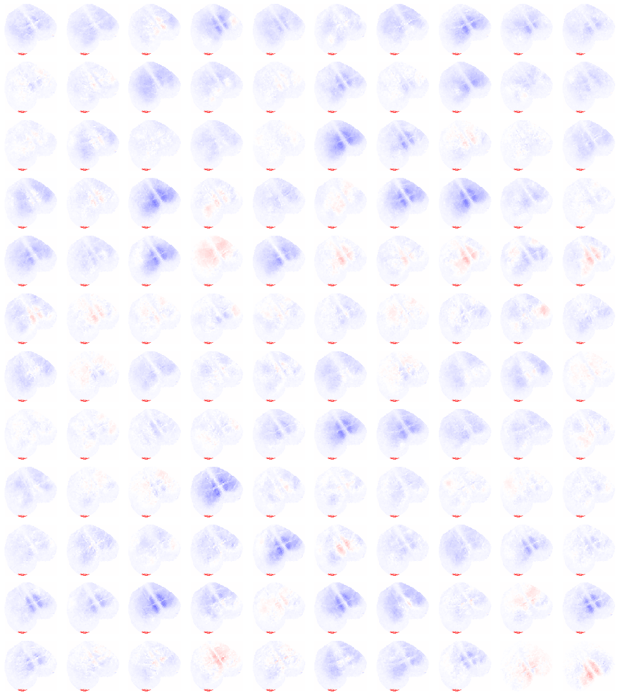
selected_df = df.loc[(df.num_regions == 1024) & (df.mu_run < 1000) & (df.mu_roi < -250)]
selected_df
| region_idx | num_regions | subject | session | run | mu_run | sigma_run | mu_roi | sigma_roi | |
|---|---|---|---|---|---|---|---|---|---|
| 137723 | 220 | 1024 | 3 | 2 | 4 | -143.937793 | 160.640793 | -253.278527 | 256.234899 |
| 137781 | 278 | 1024 | 3 | 2 | 4 | -143.937793 | 160.640793 | -257.386583 | 250.480180 |
| 137819 | 316 | 1024 | 3 | 2 | 4 | -143.937793 | 160.640793 | -250.663603 | 227.880193 |
| 137835 | 332 | 1024 | 3 | 2 | 4 | -143.937793 | 160.640793 | -257.114714 | 266.366794 |
| 137866 | 363 | 1024 | 3 | 2 | 4 | -143.937793 | 160.640793 | -251.698081 | 260.685040 |
| 137875 | 372 | 1024 | 3 | 2 | 4 | -143.937793 | 160.640793 | -275.548279 | 249.238693 |
| 137901 | 398 | 1024 | 3 | 2 | 4 | -143.937793 | 160.640793 | -270.486940 | 292.285012 |
| 137902 | 399 | 1024 | 3 | 2 | 4 | -143.937793 | 160.640793 | -273.712527 | 259.960919 |
| 137918 | 415 | 1024 | 3 | 2 | 4 | -143.937793 | 160.640793 | -260.392694 | 232.725437 |
| 137927 | 424 | 1024 | 3 | 2 | 4 | -143.937793 | 160.640793 | -251.400719 | 234.028744 |
| 137933 | 430 | 1024 | 3 | 2 | 4 | -143.937793 | 160.640793 | -254.231486 | 237.696104 |
| 137943 | 440 | 1024 | 3 | 2 | 4 | -143.937793 | 160.640793 | -252.132077 | 262.030749 |
| 137959 | 456 | 1024 | 3 | 2 | 4 | -143.937793 | 160.640793 | -292.786840 | 258.147229 |
| 138030 | 527 | 1024 | 3 | 2 | 4 | -143.937793 | 160.640793 | -254.381065 | 231.143898 |
| 138061 | 558 | 1024 | 3 | 2 | 4 | -143.937793 | 160.640793 | -259.801998 | 270.453943 |
| 138069 | 566 | 1024 | 3 | 2 | 4 | -143.937793 | 160.640793 | -273.427465 | 271.825615 |
| 138078 | 575 | 1024 | 3 | 2 | 4 | -143.937793 | 160.640793 | -258.780948 | 257.930619 |
| 138091 | 588 | 1024 | 3 | 2 | 4 | -143.937793 | 160.640793 | -292.088352 | 281.031783 |
| 138092 | 589 | 1024 | 3 | 2 | 4 | -143.937793 | 160.640793 | -254.889994 | 260.574038 |
| 138101 | 598 | 1024 | 3 | 2 | 4 | -143.937793 | 160.640793 | -294.528614 | 308.729911 |
| 138111 | 608 | 1024 | 3 | 2 | 4 | -143.937793 | 160.640793 | -275.524801 | 311.132137 |
| 138112 | 609 | 1024 | 3 | 2 | 4 | -143.937793 | 160.640793 | -299.576976 | 277.113799 |
| 138127 | 624 | 1024 | 3 | 2 | 4 | -143.937793 | 160.640793 | -250.497953 | 248.597383 |
| 138144 | 641 | 1024 | 3 | 2 | 4 | -143.937793 | 160.640793 | -259.164788 | 267.347003 |
| 138149 | 646 | 1024 | 3 | 2 | 4 | -143.937793 | 160.640793 | -259.517777 | 270.761547 |
| 138474 | 971 | 1024 | 3 | 2 | 4 | -143.937793 | 160.640793 | -268.606898 | 260.117623 |
| 138475 | 972 | 1024 | 3 | 2 | 4 | -143.937793 | 160.640793 | -282.972042 | 251.848652 |
| 138492 | 989 | 1024 | 3 | 2 | 4 | -143.937793 | 160.640793 | -273.949515 | 249.889721 |
| 198487 | 568 | 1024 | 6 | 2 | 1 | -119.964060 | 287.129874 | -265.747700 | 809.026675 |
| 198495 | 576 | 1024 | 6 | 2 | 1 | -119.964060 | 287.129874 | -257.076080 | 775.937511 |
| 198500 | 581 | 1024 | 6 | 2 | 1 | -119.964060 | 287.129874 | -258.552695 | 757.923143 |
| 198506 | 587 | 1024 | 6 | 2 | 1 | -119.964060 | 287.129874 | -269.516400 | 798.111298 |
| 198515 | 596 | 1024 | 6 | 2 | 1 | -119.964060 | 287.129874 | -262.865864 | 789.566419 |
| 198516 | 597 | 1024 | 6 | 2 | 1 | -119.964060 | 287.129874 | -252.529016 | 727.240828 |
| 198555 | 636 | 1024 | 6 | 2 | 1 | -119.964060 | 287.129874 | -283.019047 | 850.057269 |
| 198556 | 637 | 1024 | 6 | 2 | 1 | -119.964060 | 287.129874 | -273.502062 | 829.169378 |
| 198573 | 654 | 1024 | 6 | 2 | 1 | -119.964060 | 287.129874 | -257.522868 | 776.456541 |
| 198582 | 663 | 1024 | 6 | 2 | 1 | -119.964060 | 287.129874 | -255.639226 | 785.104050 |
| 198593 | 674 | 1024 | 6 | 2 | 1 | -119.964060 | 287.129874 | -260.498275 | 815.395569 |
| 198632 | 713 | 1024 | 6 | 2 | 1 | -119.964060 | 287.129874 | -256.098337 | 760.146966 |
| 198672 | 753 | 1024 | 6 | 2 | 1 | -119.964060 | 287.129874 | -253.487532 | 837.755436 |
| 198690 | 771 | 1024 | 6 | 2 | 1 | -119.964060 | 287.129874 | -279.058378 | 936.896080 |
| 198696 | 777 | 1024 | 6 | 2 | 1 | -119.964060 | 287.129874 | -268.404279 | 870.462048 |
| 198699 | 780 | 1024 | 6 | 2 | 1 | -119.964060 | 287.129874 | -251.063095 | 795.499852 |
| 198710 | 791 | 1024 | 6 | 2 | 1 | -119.964060 | 287.129874 | -261.123888 | 823.548885 |
num_regions = 1024
load = load_organized_data(
folder='atlas-{:d}_unfiltered_unnormalized'.format(num_regions),
subject=6,
session=2,
run=1,
)
x = np.zeros(load['atlas_kmeans'].shape + (list(load['ca'].values())[0].shape[-1],))
for key, data in load['ca'].items():
num_nan = np.isnan(load['ca'][key]).mean().sum()
if num_nan > 0:
print(key, num_nan)
continue
x[load['atlas_kmeans'] == key] = load['ca'][key]
x.shape
(186, 189, 5500)
sns.set_style('white')
plt.imshow(x[..., 4500])
<matplotlib.image.AxesImage at 0x7f0eb4f615b0>
# t = 1800
t = 3500
res = 10
_slice = x[..., t: t + res * 120]
vminmax = np.max(np.abs(_slice))
sns.set_style('white')
nrows, ncols = 12, 10
fig, axes = plt.subplots(nrows, ncols, figsize=(13.5, 15))
for idx in range(_slice.shape[-1] // res):
i, j = idx//ncols, idx%ncols
axes[i, j].imshow(_slice[..., idx * res], vmin=-vminmax, vmax=vminmax, cmap='bwr', interpolation='none')
axes[i, j].axis('off')
fig.tight_layout()
plt.show()
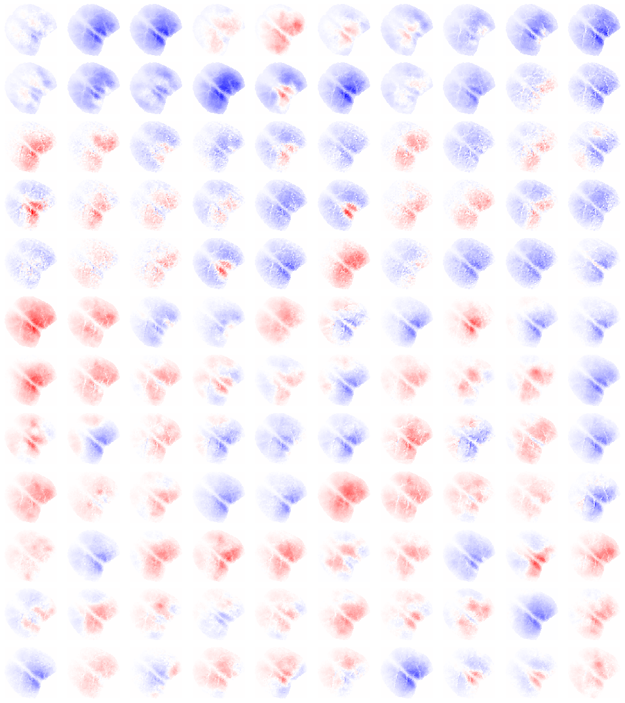
aaa
selected_df = df.loc[(df.num_regions == 256) & (df.mu < 1000)]
palette = {i+1: 'C{:d}'.format(i) for i in range(config.num_subjects)}
sns.set_style('whitegrid')
plt.figure(figsize=(13, 12))
sns.scatterplot(
data=selected_df,
x='mu',
y='sd',
hue='subject',
palette=palette,
s=100,
alpha=0.7,
)
<AxesSubplot:xlabel='mu', ylabel='sd'>
plt.plot(df.mu)
[<matplotlib.lines.Line2D at 0x7f14eb012d00>]
extreme_df = df.loc[df.mu > 1000]
extreme_df
| num_regions | subject | session | run | mu | sd | |
|---|---|---|---|---|---|---|
| 49 | 32 | 3 | 2 | 2 | 1597.116955 | 2633.963079 |
| 53 | 32 | 3 | 2 | 6 | 1649.348618 | 2721.862042 |
| 254 | 128 | 3 | 2 | 2 | 1584.145019 | 2636.826383 |
| 258 | 128 | 3 | 2 | 6 | 1636.831984 | 2723.629068 |
| 459 | 256 | 3 | 2 | 2 | 1603.137533 | 2670.423103 |
| 463 | 256 | 3 | 2 | 6 | 1655.759445 | 2756.898508 |
| 664 | 1024 | 3 | 2 | 2 | 1596.874925 | 2667.052726 |
| 668 | 1024 | 3 | 2 | 6 | 1649.246133 | 2752.533379 |
df.mu.argsort()[:3], df.mu.argsort()[-3:]
(0 461
1 51
2 666
Name: mu, dtype: int64,
817 668
818 53
819 463
Name: mu, dtype: int64)
df.iloc[461]
num_regions 256.000000
subject 3.000000
session 2.000000
run 4.000000
mu -144.903823
sd 173.411227
Name: 461, dtype: float64
df.iloc[463]
num_regions 256.000000
subject 3.000000
session 2.000000
run 6.000000
mu 1655.759445
sd 2756.898508
Name: 463, dtype: float64
idx = df.mu.argsort().tolist()[-1]
df.iloc[idx]
num_regions 256.000000
subject 3.000000
session 2.000000
run 6.000000
mu 1655.759445
sd 2756.898508
Name: 463, dtype: float64
int(df.iloc[idx].subject), int(df.iloc[idx].session), int(df.iloc[idx].run)
(3, 2, 6)
load = load_organized_data(
folder='atlas-{:d}_unfiltered_unnormalized'.format(num_regions),
config=config,
subject=int(df.iloc[idx].subject),
session=int(df.iloc[idx].session),
run=int(df.iloc[idx].run),
)
x = np.zeros(load['atlas_kmeans'].shape + (list(load['ca'].values())[0].shape[-1],))
for key, data in load['ca'].items():
num_nan = np.isnan(load['ca'][key]).mean().sum()
if num_nan > 0:
print(key, num_nan)
continue
x[load['atlas_kmeans'] == key] = load['ca'][key]
x.shape
(187, 193, 5500)
plt.plot(x.mean(0).mean(0))
[<matplotlib.lines.Line2D at 0x7f1549ef6670>]
plt.figure(figsize=(20, 4))
plt.plot(x.mean(0).mean(0)[:2000])
[<matplotlib.lines.Line2D at 0x7f1552611ca0>]
plt.figure(figsize=(20, 4))
plt.plot(x[46, 57][:1000])
[<matplotlib.lines.Line2D at 0x7f15525252e0>]
df.iloc[idx].subject
3.0
load_raw = load_ca_with_extras(
subject=7,
session=2,
run=2,
)
load_raw2 = load_ca_with_extras(
subject=7,
session=2,
run=7,
)
Loading:
sub-SLC07_ses-2_run-2_task-led_ca.npy
--> 50 s <-- excluded from the beginning of each run. Combined runs duration:
00 - 00:09:10 (dd - hh:mm:ss)
Loading:
sub-SLC07_ses-2_run-7_task-rest_ca.npy
--> 50 s <-- excluded from the beginning of each run. Combined runs duration:
00 - 00:09:10 (dd - hh:mm:ss)
sns.set_style('whitegrid')
plt.figure(figsize=(13.5, 5.5))
plt.subplot(211)
plt.plot(load_raw['ca'].mean(0).mean(0)[:2000])
plt.title(load_raw['file_name'])
plt.subplot(212)
plt.plot(load_raw2['ca'].mean(0).mean(0)[:2000])
plt.title(load_raw2['file_name'])
plt.tight_layout()
# plt.savefig('bug_sub-SLC03_ses-2_run-[2,6].png')
plt.show()
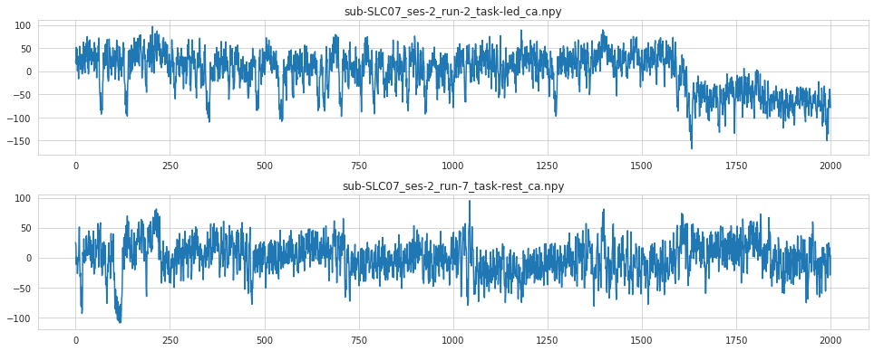
sns.set_style('white')
plt.figure(figsize=(12, 4.5))
plt.subplot(121)
plt.imshow(load_raw['ca'][..., 1200], interpolation='none')
plt.title(load_raw['file_name'])
plt.colorbar()
plt.subplot(122)
plt.imshow(load_raw2['ca'][..., 1200], interpolation='none')
plt.title(load_raw2['file_name'])
plt.colorbar()
plt.tight_layout()
plt.savefig('bug_sub-SLC07_ses-2_run-[2,7].png')
plt.show()
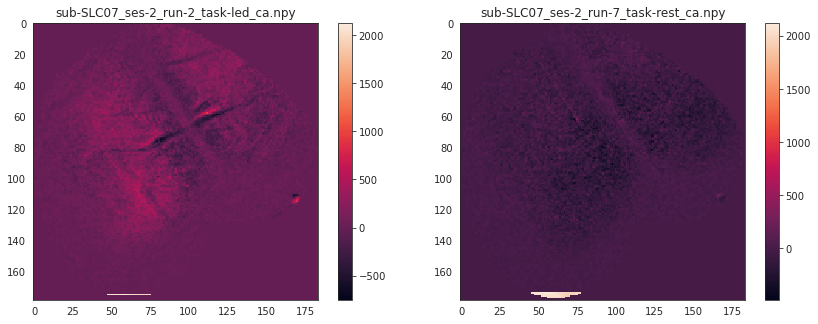
plt.imshow(load_raw['ca'][..., 4500], interpolation='none')
plt.plot(112, 101, marker='x')
[<matplotlib.lines.Line2D at 0x7f14921e1ac0>]
x = load_raw['ca'].copy()
# t = 1800
t = 100
res = 1
_slice = x[..., t: t + res * 120]
vminmax = np.max(np.abs(_slice))
sns.set_style('white')
nrows, ncols = 12, 10
fig, axes = plt.subplots(nrows, ncols, figsize=(13.5, 15))
for idx in range(_slice.shape[-1] // res):
i, j = idx//ncols, idx%ncols
axes[i, j].imshow(_slice[..., idx * res], vmin=-vminmax, vmax=vminmax, cmap='bwr', interpolation='none')
axes[i, j].axis('off')
fig.tight_layout()
plt.show()
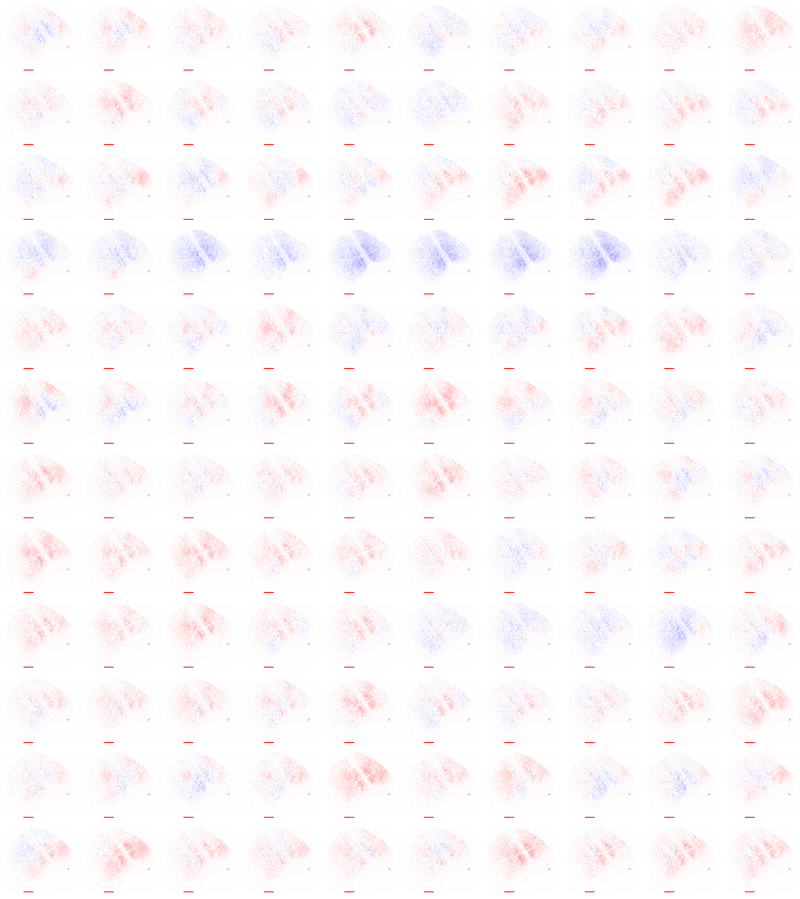
vminmax
432.9723603621773
Community: Kmeans vs anatomical#
128#
num_regions = 512
data_all = {}
for run in [1, 3, 5, 7]:
data_all[run] = load_organized_data(
folder='atlas-{:d}_unfiltered_unnormalized'.format(num_regions),
subject=6,
session=1,
run=run,
)
df = pd.DataFrame()
for run, load in data_all.items():
x_dict = data_all[run]['ca'].copy()
x = np.concatenate([item.reshape(1, -1) for item in x_dict.values()])
mean, std = x.mean(), x.std()
x_dict_normalized = {k: (v - mean) / std for k, v in x_dict.items()}
df = pd.concat([df, pd.DataFrame.from_dict(x_dict_normalized)])
node_labels = df.columns.values.tolist()
node_labels = {i: lbl for i, lbl in enumerate(node_labels)}
df.describe()
| 1 | 2 | 3 | 4 | 5 | 6 | 7 | 8 | 9 | 10 | ... | 503 | 504 | 505 | 506 | 507 | 508 | 509 | 510 | 511 | 512 | |
|---|---|---|---|---|---|---|---|---|---|---|---|---|---|---|---|---|---|---|---|---|---|
| count | 22000.000000 | 22000.000000 | 22000.000000 | 22000.000000 | 22000.000000 | 22000.000000 | 22000.000000 | 22000.000000 | 22000.000000 | 22000.000000 | ... | 22000.000000 | 22000.000000 | 22000.000000 | 22000.000000 | 22000.000000 | 22000.000000 | 22000.000000 | 22000.000000 | 22000.000000 | 22000.000000 |
| mean | -0.015576 | -0.016330 | -0.014932 | -0.016951 | -0.016333 | -0.016529 | -0.007332 | -0.016444 | -0.009750 | -0.015631 | ... | -0.034172 | -0.018994 | -0.022956 | -0.026412 | -0.017878 | -0.017257 | -0.024939 | -0.016166 | -0.008691 | -0.008810 |
| std | 0.243902 | 0.257521 | 0.255347 | 0.225571 | 0.291708 | 0.269305 | 0.275015 | 0.202851 | 0.309472 | 0.304737 | ... | 0.517897 | 0.403787 | 0.395511 | 0.460453 | 0.416147 | 0.387208 | 0.412840 | 0.359771 | 0.315424 | 0.295800 |
| min | -0.878514 | -0.983421 | -0.896685 | -0.841565 | -1.071174 | -1.021744 | -1.126139 | -0.743395 | -0.997837 | -1.035331 | ... | -1.906475 | -1.385321 | -1.440558 | -1.797572 | -1.585460 | -1.352208 | -1.695714 | -1.340215 | -1.098001 | -1.041329 |
| 25% | -0.176944 | -0.186837 | -0.183101 | -0.164631 | -0.211731 | -0.190817 | -0.189469 | -0.146977 | -0.218243 | -0.224480 | ... | -0.376370 | -0.284475 | -0.285311 | -0.332559 | -0.294114 | -0.274950 | -0.304429 | -0.255703 | -0.217848 | -0.207126 |
| 50% | -0.018607 | -0.016937 | -0.018789 | -0.020404 | -0.019802 | -0.014536 | -0.009886 | -0.021926 | -0.015111 | -0.024063 | ... | -0.032743 | -0.024053 | -0.023506 | -0.023605 | -0.022649 | -0.026292 | -0.025078 | -0.025470 | -0.016091 | -0.019361 |
| 75% | 0.135784 | 0.150518 | 0.147910 | 0.121159 | 0.170019 | 0.159620 | 0.168614 | 0.107075 | 0.189148 | 0.183015 | ... | 0.297815 | 0.231525 | 0.230970 | 0.268846 | 0.242803 | 0.223288 | 0.238567 | 0.206524 | 0.185098 | 0.172955 |
| max | 1.088701 | 1.157435 | 1.159823 | 1.146705 | 1.277094 | 1.293053 | 1.224017 | 0.971149 | 1.545293 | 1.318778 | ... | 3.510214 | 3.396821 | 2.060780 | 2.666833 | 2.801418 | 2.593310 | 2.583866 | 2.123589 | 1.690323 | 2.175212 |
8 rows × 512 columns
thresholds = [0.70, 0.75, 0.77, 0.78, 0.79, 0.80, 0.82]
corrs = get_corrs(df, thresholds=thresholds)
_ = plot_corrs(corrs['pearson'], corrs['spearman'])
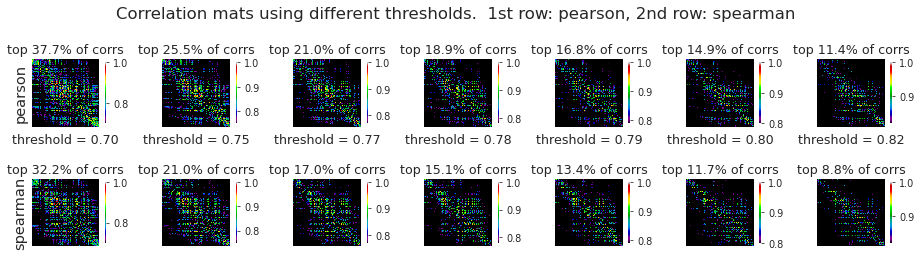
_ = plot_corr_hist(
corr_list=[corrs['pearson_corr'], corrs['spearman_corr']],
labels=['pearson', 'spearman'],
colors=['C0', 'C3'],
)
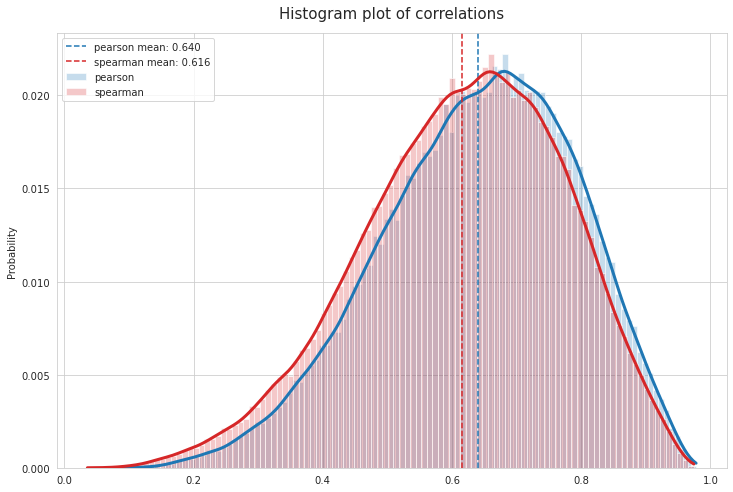
graphs = {th: nx.from_numpy_matrix(a) for th, a in corrs['spearman'].items()}
results_louvain = run_louvain(graphs[0.70], res=np.logspace(-0.3, 0.3, 1001))
selected_idxs = [300, 315, 340, 510, 680]
plot_louvain_results(results_louvain, selected_idxs=selected_idxs)
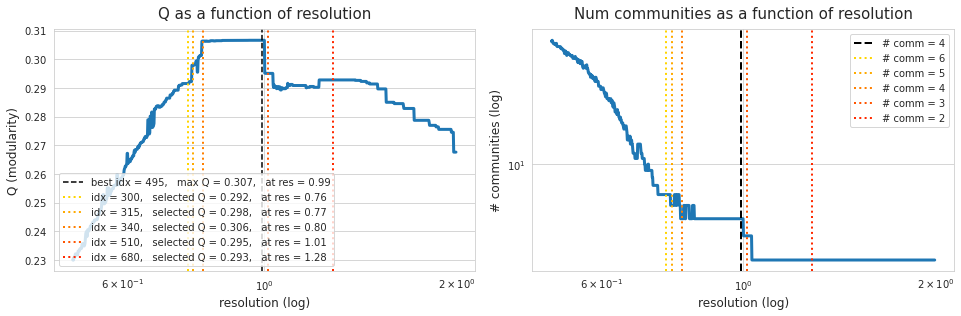
# selected_idxs = [450, 540, 585, 680] # [440, 520, 530, 590]
fig, axes = plot_louvain_communities(
pearson=corrs['pearson'],
spearman=corrs['spearman'],
atlas=load['atlas_kmeans'],
modularities=results_louvain['modularities'],
selected_idxs=selected_idxs,
pearson_th=0.78,
spearman_th=0.75,
figsize=(12, 4),
colorbar=False, )
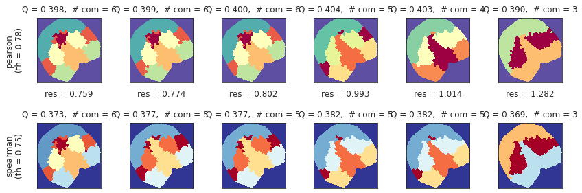
fig.savefig('louvain_{:d}.pdf'.format(num_regions), dpi=100)
Allen#
data_all = {}
for run in [1, 3, 5, 7]:
data_all[run] = load_organized_data(
folder='atlas-allen_unfiltered_unnormalized',
subject=6,
session=1,
run=run,
)
df = pd.DataFrame()
for run, load in data_all.items():
x_dict = data_all[run]['ca'].copy()
x = np.concatenate([item.reshape(1, -1) for item in x_dict.values()])
mean, std = x.mean(), x.std()
x_dict_normalized = {k: (v - mean) / std for k, v in x_dict.items()}
df = pd.concat([df, pd.DataFrame.from_dict(x_dict_normalized)])
node_labels = df.columns.values.tolist()
node_labels = {i: lbl for i, lbl in enumerate(node_labels)}
df.describe()
| 2 | 3 | 4 | 5 | 6 | 7 | 8 | 9 | 10 | 11 | ... | 525 | 526 | 528 | 530 | 538 | 539 | 540 | 541 | 655 | 656 | |
|---|---|---|---|---|---|---|---|---|---|---|---|---|---|---|---|---|---|---|---|---|---|
| count | 22000.000000 | 22000.000000 | 22000.000000 | 22000.000000 | 22000.000000 | 22000.000000 | 22000.000000 | 22000.000000 | 22000.000000 | 22000.000000 | ... | 22000.000000 | 22000.000000 | 22000.000000 | 22000.000000 | 22000.000000 | 22000.000000 | 22000.000000 | 22000.000000 | 22000.000000 | 22000.000000 |
| mean | -0.014222 | -0.015646 | -0.013182 | -0.002818 | 0.016089 | -0.013791 | -0.005555 | 0.041341 | -0.007254 | -0.006985 | ... | -0.029206 | -0.014502 | -0.003475 | -0.014626 | 0.024293 | 0.055400 | 0.053549 | -0.029575 | 0.021877 | -0.013121 |
| std | 0.541672 | 0.401395 | 0.544768 | 1.050007 | 1.091835 | 0.363962 | 0.830811 | 1.658102 | 0.924634 | 0.716810 | ... | 0.433792 | 0.935283 | 0.342929 | 0.154776 | 1.451832 | 1.897442 | 1.431166 | 0.393712 | 0.730806 | 0.548553 |
| min | -2.090138 | -1.664967 | -1.823267 | -3.528780 | -3.492999 | -1.345711 | -2.793856 | -5.078311 | -3.193386 | -2.273137 | ... | -1.658327 | -2.998129 | -1.320056 | -0.634472 | -5.322611 | -6.587831 | -6.075199 | -1.507418 | -2.725311 | -2.046034 |
| 25% | -0.368519 | -0.270327 | -0.389271 | -0.727548 | -0.717184 | -0.260354 | -0.566781 | -1.089361 | -0.643342 | -0.504585 | ... | -0.317294 | -0.655384 | -0.212617 | -0.118062 | -0.851856 | -1.112244 | -0.838438 | -0.290850 | -0.448369 | -0.363259 |
| 50% | -0.011388 | -0.016244 | -0.028211 | -0.025918 | -0.016705 | -0.020613 | -0.022091 | -0.025909 | -0.028908 | -0.025339 | ... | -0.028354 | -0.030394 | -0.016986 | -0.015098 | 0.083207 | 0.136200 | 0.068298 | -0.025670 | 0.019102 | -0.022726 |
| 75% | 0.340526 | 0.232021 | 0.338943 | 0.685105 | 0.729793 | 0.222482 | 0.546329 | 1.104790 | 0.604741 | 0.455403 | ... | 0.250553 | 0.598931 | 0.183595 | 0.081536 | 0.965031 | 1.245081 | 0.868542 | 0.227096 | 0.452099 | 0.314880 |
| max | 3.258669 | 2.840883 | 2.705093 | 5.458090 | 6.645909 | 1.594632 | 4.100670 | 8.935480 | 4.862756 | 4.046291 | ... | 2.257118 | 5.007505 | 4.796357 | 0.974118 | 10.581330 | 14.146948 | 17.118085 | 1.923165 | 9.821538 | 5.349386 |
8 rows × 61 columns
thresholds = [0.75, 0.78, 0.79, 0.80, 0.81, 0.82, 0.83]
corrs = get_corrs(df, thresholds=thresholds)
_ = plot_corrs(corrs['pearson'], corrs['spearman'])
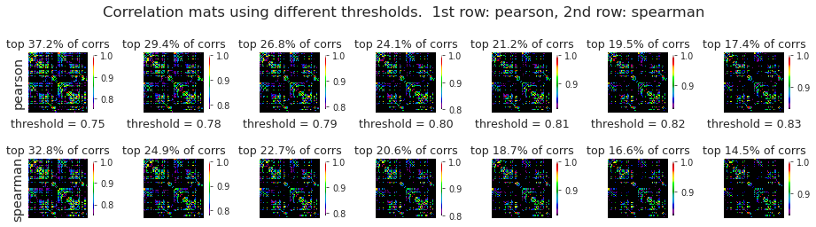
plot_corr_hist(
corr_list=[corrs['pearson_corr'], corrs['spearman_corr']],
labels=['pearson', 'spearman'],
colors=['C0', 'C3'],
)
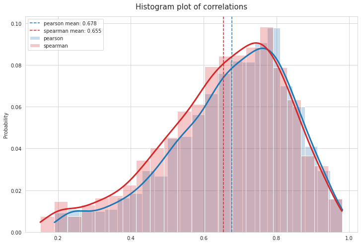
(<Figure size 864x576 with 1 Axes>,
<AxesSubplot:title={'center':'Histogram plot of correlations'}, ylabel='Probability'>)
graphs = {th: nx.from_numpy_matrix(a) for th, a in corrs['spearman'].items()}
results_louvain = run_louvain(graphs[0.82], res=np.logspace(-1, 1, 1001))
selected_idxs = [460, 540, 610, 700]
plot_louvain_results(results_louvain, selected_idxs=selected_idxs)
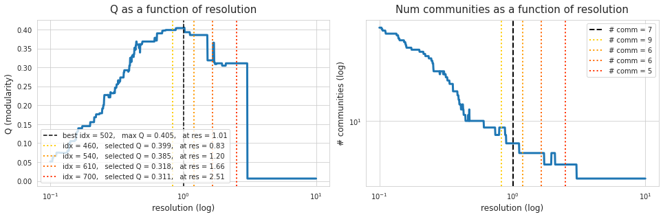
selected_idxs = [450, 540, 600, 620] # [440, 520, 530, 590]
fig, axes = plot_louvain_communities(
pearson=corrs['pearson'],
spearman=corrs['spearman'],
atlas=load['atlas'],
modularities=results_louvain['modularities'],
selected_idxs=selected_idxs,
pearson_th=0.83,
spearman_th=0.82,
figsize=(12, 4.5),
colorbar=False, )
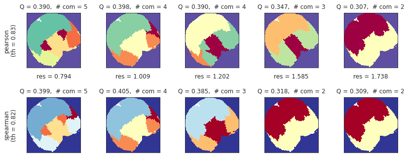
fig.savefig('louvain_allen.pdf', dpi=100)